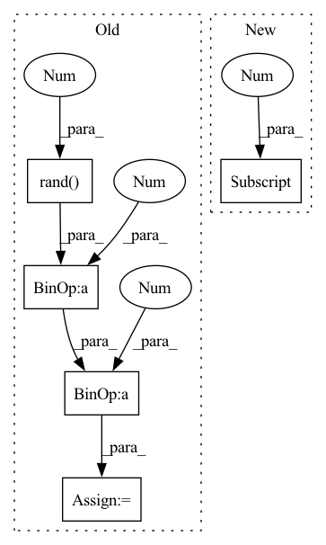

Pattern ID :29214
Before Change
self.filtered_classes[label][random_index, :, :].numpy() / 255, mode="L"
)
// get random angles of rotation
rot_a, rot_b = torch.rand(2) * 90 - 45
x_a_rotate = transforms.functional.rotate(
x_a, rot_a.item(), interpolation=InterpolationMode.BILINEAR
)
x_b_rotate = transforms.functional.rotate(After Change
x_a = self.transform(x_a)
// get random index of image with same class
random_index = np.random.choice(self.filtered_nums[label])
x_b = self.transform(self.dataset[random_index][0] )
if self.flatten:
x_a = torch.flatten(x_a)
x_b = torch.flatten(x_b)In pattern: SUPERPATTERN
Frequency: 3
Non-data size: 5
Instances Fragment ID: 85929566
Project Name: jameschapman19/cca_zoo
Commit Name: a7d5f6e5f6cc29059f96035a8dfad4eee058bf32
Time: 2021-11-17
Author: james.chapman.19@ucl.ac.uk
File Name: cca_zoo/data/toy.py
M Class Name: Tangled_MNIST_Dataset
N Class Name: Tangled_MNIST_Dataset
M Method Name: __getitem__(2)
N Method Name: __getitem__(2)
M Parent Class: Dataset
N Parent Class: Dataset
M File Name: cca_zoo/data/toy.py
N File Name: cca_zoo/data/toy.py
M Start Line: 180
M End Line: 202
N Start Line: 180
N End Line: 188
Before Change
// init random coords
best_stress = float("Inf") * torch.ones(batch, device = device).type(dtype)
best_3d_coords = 2 *torch.rand(batch, N, 3, device = device).type(dtype) - 1
// iterative updates:
for i in range(iters):
// compute distance matrix of coords and stress
dist_mat = torch.cdist(best_3d_coords, best_3d_coords, p=2).clone()After Change
if verbose >= 2:
print("it: %d, stress %s" % (i, stress))
// update metrics if relative improvement above tolerance
if (his[-1] - stress / dis).mean() <= tol:
if verbose:
print("breaking at iteration %d with stress %s" % (i,
stress / dis)) Fragment ID: 85929565
Project Name: lucidrains/alphafold2
Commit Name: bc8963412e0b2798b1b8de533b52342543c7b8e0
Time: 2021-04-25
Author: ericalcaide1@gmail.com
File Name: alphafold2_pytorch/utils.py
M Class Name: AnonimousClass
N Class Name: AnonimousClass
M Method Name: mds_torch(6)
N Method Name: mds_torch(6)
M Parent Class:
N Parent Class:
M File Name: alphafold2_pytorch/utils.py
N File Name: alphafold2_pytorch/utils.py
M Start Line: 653
M End Line: 695
N Start Line: 649
N End Line: 692
Before Change
def __getitem__(self, idx):
x_a = self.a_transform(self.data[idx].numpy() / 255)
rot_a = torch.rand(1) * 90 - 45
x_a = transforms.functional.rotate(
x_a, rot_a.item(), interpolation=InterpolationMode.BILINEAR
)
x_a = self.base_transform(x_a)After Change
x_a = self.a_transform(x_a)
// get random index of image with same class
random_index = np.random.choice(self.filtered_nums[label])
x_b = self.b_transform(self.dataset[random_index][0] )
if self.flatten:
x_a = torch.flatten(x_a)
x_b = torch.flatten(x_b) Fragment ID: 85929564
Project Name: jameschapman19/cca_zoo
Commit Name: a7d5f6e5f6cc29059f96035a8dfad4eee058bf32
Time: 2021-11-17
Author: james.chapman.19@ucl.ac.uk
File Name: cca_zoo/data/toy.py
M Class Name: Noisy_MNIST_Dataset
N Class Name: Noisy_MNIST_Dataset
M Method Name: __getitem__(2)
N Method Name: __getitem__(2)
M Parent Class: Dataset
N Parent Class: Dataset
M File Name: cca_zoo/data/toy.py
N File Name: cca_zoo/data/toy.py
M Start Line: 123
M End Line: 141
N Start Line: 128
N End Line: 136